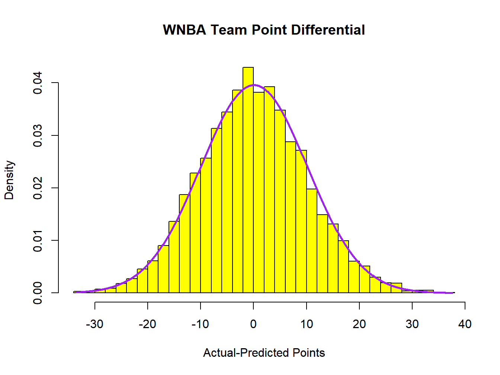
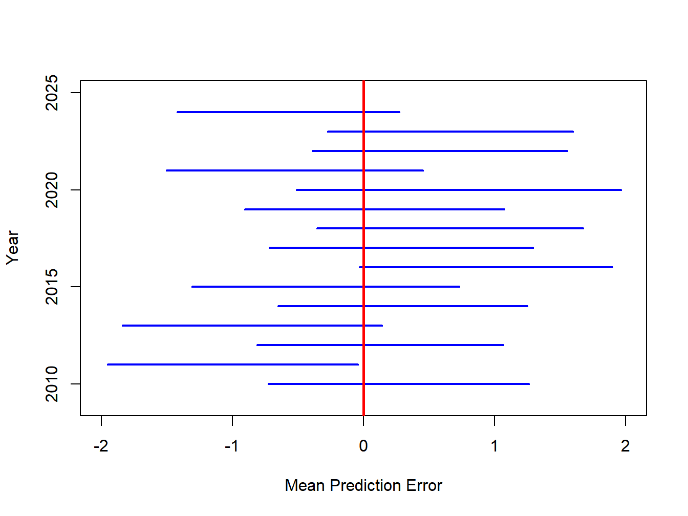
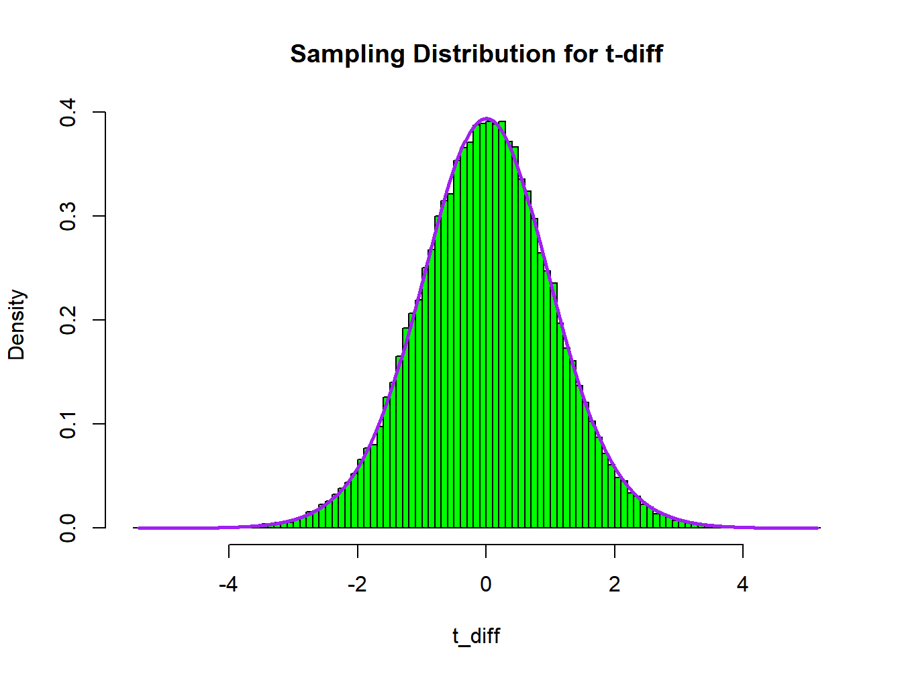
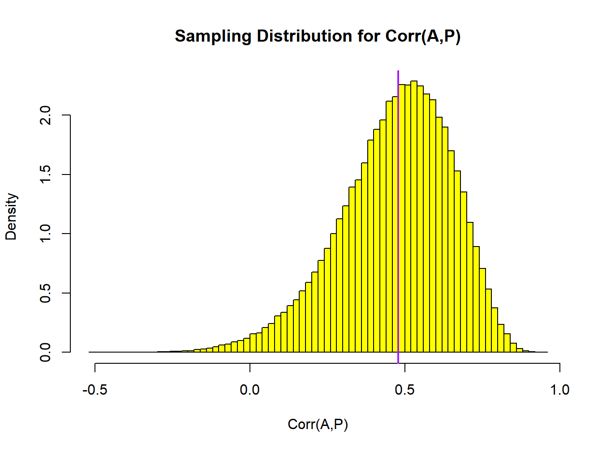
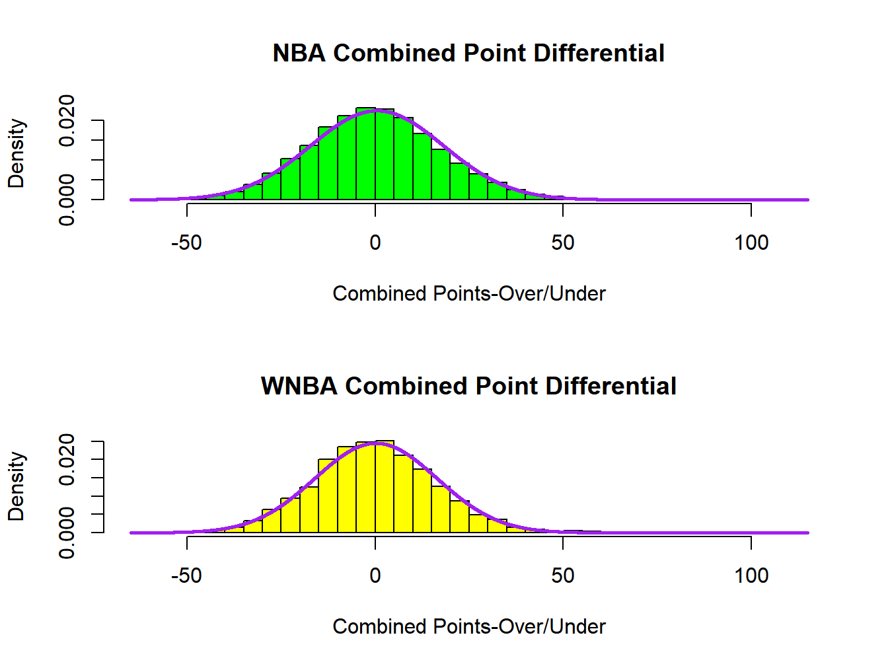
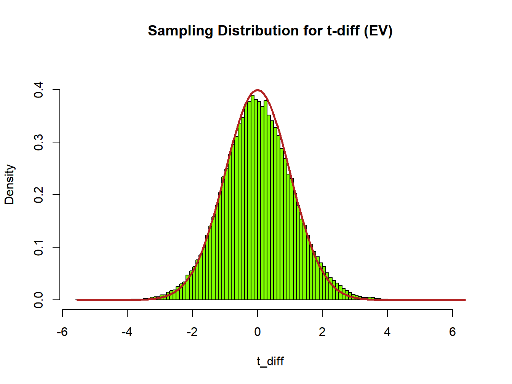

Chapter 1 Comparing Two Treatments or Populations
In this Chapter, we introduce two designs for comparing two treatments or populations. These could be measurement devices, drug formulations, brands of food, or any pair of conditions. The two designs are based on independent or paired samples. We will develop the \(t\)-tests for each design in this chapter to compare means. We will also include methods of comparing population variances for independent or paired samples.
We begin with linear functions of random variables, then introduce Student’s \(t\)-distribution for normally distributed data. Next, we cover \(t\)-tests for both paired and independent samples. Then we consider tests for equal variances for both independent and paired samples. Finally, we will apply these methods directly and using R functions.
Note that we will use capital letters for estimators that are random variables based on random samples, such as \(\overline{Y}\), \(\overline{D}\), and \(S^2\). We will use lower case letters to represent estimators from a specific sample, such as \(\overline{y}\), \(\overline{d}\), and \(s^2\), resulting from an experiment or observational study, being used to construct a Confidence Interval or test a hypothesis.
1.1 Linear Functions of Random Variables
Let \(Y_1,\ldots,Y_n\) be a sample of random variables with the following properties.
\[ E\left\{Y_i\right\} = \mu_i \qquad V\left\{Y_i\right\} = \sigma_i^2 \qquad \mbox{COV}\left\{Y_i,Y_{i'}\right\}=\sigma_{ii'} \qquad i=1,\ldots,n \quad i\neq i' \]
Now, let \(a_1,\ldots,a_n\) be a set of constants (not random variables), and define \(U=\sum_{i=1}^na_iY_i\). Then, we have the following results regarding the distribution of \(U\).
\[ E\{U\} = E\left\{\sum_{i=1}^na_iY_i\right\}=\sum_{i=1}^na_i\mu_i \qquad V\{U\}=V\left\{\sum_{i=1}^na_iY_i\right\}=\sum_{i=1}^na_i^2\sigma_i^2+ 2\sum_{i=1}^{n-1}\sum_{i'=i+1}^na_ia_{i'}\sigma_{ii'} \]
Note that when \(Y_1,\ldots,Y_n\) are independent, then \(V\{U\}=V\left\{\sum_{i=1}^na_iY_i\right\}=\sum_{i=1}^na_i^2\sigma_i^2\). Also, if \(Y_1,\ldots,Y_n\) are normally distributed, then \(U\) is as well.
Sample Mean for a Random Sample from a Normal Distribution
Let \(Y_1,\ldots,Y_n\) be a random sample from a normal distribution with mean \(\mu\) and variance \(\sigma^2\). Then we are interested in the distribution of the sample mean \(\overline{Y}\), which is a special case of \(U\) described above, with \(a_i=1/n\).
\[ E\left\{Y_i\right\}=\mu \quad V\left\{Y_i\right\}=\sigma^2 \quad \mbox{COV}\left\{Y_i,Y_{i'}\right\}=0 \qquad \overline{Y}=\frac{\sum_{i=1}^nY_i}{n}=\sum_{i=1}^n\left(\frac{1}{n}\right)Y_i \] \[ E\left\{\overline{Y}\right\}= E\left\{\frac{\sum_{i=1}^nY_i}{n}\right\}= \sum_{i=1}^n\left(\frac{1}{n}\right)E\left\{Y_i\right\}= \sum_{i=1}^n\left(\frac{1}{n}\right)\mu= n\left(\frac{1}{n}\right)\mu=\mu \] \[ V\left\{\overline{Y}\right\}= V\left\{\sum_{i=1}^n\left(\frac{1}{n}\right)Y_i\right\}= \] \[ \sum_{i=1}^n\left(\frac{1}{n}\right)^2V\left\{Y_i\right\}+ 2\sum_{i=1}^{n-1}\sum_{i'=i+1}^n\left(\frac{1}{n}\right)\left(\frac{1}{n}\right) \mbox{COV}\left\{Y_i,Y_{i'}\right\}= \] \[ n\left(\frac{1}{n}\right)^2\sigma^2+2\frac{n(n-1)}{2}\left(\frac{1}{n}\right)^2(0)= \frac{\sigma^2}{n} \quad \Rightarrow \quad \overline{Y} \sim N\left(\mu,\frac{\sigma^2}{n}\right) \]
Thus for the sample mean in this setting, it is normally distributed with mean \(\mu\) and variance \(\sigma^2/n\). Further we say that it’s Standard Error is \(SE\left\{\overline{Y}\right\}=\sqrt{\sigma^2/n}\).
Distribution of Paired Differences and Their Mean Difference
Suppose we are observing measurements on a sample of experimental units under two conditions. For example, we may be observing vertical leap on a sample of basketball players, with each player being measured wearing two different brands of shoes (two measurements per player). Suppose the brands have means \(\mu_1\) and \(\mu_2\), their variances are equal \(\sigma_1^2=\sigma_2^2=\sigma^2\), and the covariance of vertical leaps within players is \(\sigma_{12}\). The covariance would expected to be positive, as players will tend to be above or below the mean for both brands, depending on their natural jumping ability. Suppose there are a sample of \(n\) players in the experiment. We observe the pairs \(\left\{\left(Y_{11},Y_{21}\right),\ldots,\left(Y_{1n},Y_{2n}\right)\right\}\) and we are interested in the difference in the leaps for the players \(D_i=Y_{1i}-Y_{2i}\). Note that by definition, the within player covariance is \(\sigma_{12}=\rho\sigma_1\sigma_2\), where \(\rho\) is the correlation between the within player measurements. Now we derive the distribution of the within player differences, and the mean difference, where we assume differences across players are independent.
\[ E\left\{Y_{1i}\right\}=\mu_1 \quad E\left\{Y_{2i}\right\}=\mu_2 \qquad V\left\{Y_{1i}\right\}=V\left\{Y_{2i}\right\}=\sigma^2 \qquad \mbox{COV}\left\{Y_{1i},Y_{2i}\right\}=\sigma_{12}=\rho\sigma^2 \] \[ D_i=Y_{1i}-Y_{2i}=(1)Y_{1i} + (-1)Y_{2i} \quad \Rightarrow \quad a_1=1,a_2=-1 \] \[ E\left\{D_i\right\}=E\left\{Y_{1i}-Y_{2i}\right\}= (1) E\left\{Y_{1i}\right\}+(-1)E\left\{Y_{2i}\right\}=\mu_1-\mu_2=\mu_D \] \[ V\left\{D_i\right\}=V\left\{Y_{1i}-Y_{2i}\right\}= (1)^2V\left\{Y_{1i}\right\}+(-1)^2V\left\{Y_{2i}\right\}+ 2(1)(-1)\mbox{COV}\left\{Y_{1i},Y_{2i}\right\}= \] \[ \sigma_1^2+\sigma_2^2-2\rho\sigma_1\sigma_2=2\sigma^2-2\rho\sigma^2= 2(1-\rho)\sigma^2=\sigma_D^2 \]
Now, we are interested in the mean of the \(n\) differences \(\overline{D}\). Making use of the results from the distribution of the sample mean above, we have the following results. Further, we will assume that measurements are (jointly) normally distributed among players.
\[ E\left\{\overline{D}\right\}=\mu_D=\mu_1-\mu_2 \qquad V\left\{\overline{D}\right\}=\frac{\sigma_D^2}{n}=\frac{2(1-\rho)\sigma^2}{n} \qquad \overline{D}\sim N\left(\mu_D,\frac{\sigma_D^2}{n}\right) \]
1.2 Student’s \(t\)-Distribution for Making Inference on Population Means
Now consider the sample variance \(S^2\), assuming independent, normally distributed data with population mean \(\mu\) and variance \(\sigma^2\).
\[ S^2 = \frac{\sum_{i=1}^n\left(Y_i-\overline{Y}\right)^2}{n-1} \qquad \qquad W=\frac{(n-1)S^2}{\sigma^2}\sim \chi_{n-1}^2 \] That is, the scaled sample variance follows a Chi-square distribution with \(n-1\) degrees of freedom. Further, under the normal model, the sample mean \(\overline{Y}\) and sample variance \(S^2\) are independent. We define two random variables that are independent. \(Z\) follows a standard normal distribution and \(W\) follows a Chi-square distribution with \(\nu\) degrees of freedom, and the resulting random variable \(T\) follows Student’s \(t\)-distribution with \(\nu\) degrees of freedom.
\[ Z \sim N(0,1) \qquad W\sim \chi_{\nu}^2 \qquad Z\perp W \quad \Rightarrow \quad T=\frac{Z}{\sqrt{W/\nu}}\sim t_{\nu} \]
Inference Concerning a Population Mean Based on the Sample Mean and Variance
Returning to the random sample from a normal distribution with population mean \(\mu\) and variance \(\sigma^2\), we have the following results for the sample mean \(\overline{Y}\) and variance \(S^2\).
\[ \overline{Y} \sim N\left(\mu,\frac{\sigma^2}{n}\right) \quad \Rightarrow \quad Z=\frac{\overline{Y}-\mu}{\sqrt{\sigma^2/n}} \sim N(0,1) \qquad W=\frac{(n-1)S^2}{\sigma^2} \sim \chi_{n-1}^2 \qquad Z\perp W \] \[ T=\frac{Z}{\sqrt{W/(n-1)}} = \frac{\frac{\overline{Y}-\mu}{\sqrt{\sigma^2/n}}}{\sqrt{\frac{(n-1)S^2}{\sigma^2}/(n-1)}} = \frac{\overline{Y}-\mu}{\sqrt{S^2/n}}= \frac{\overline{Y}-\mu}{\hat{SE}\left\{\overline{Y}\right\}} \sim t_{n-1} \]
That is when we divide \(\overline{Y}-\mu\) by its estimated standard error, we obtain a random variable that follows Student’s \(t\)-distribution with \(n-1\) degrees of freedom. This allows inference for the population mean, without having to know the population variance. We get the following result when we take repeated samples of size \(n\), observing \(\overline{Y}\) and \(S^2\).
\[ 1-\alpha=P\left(t_{\alpha/2;n-1} \leq \frac{\overline{Y}-\mu}{\hat{SE}\left\{\overline{Y}\right\}} \leq t_{1-\alpha/2;n-1} \right)= \] \[ P\left(\overline{Y}-t_{1-\alpha/2;n-1}\hat{SE}\left\{\overline{Y}\right\}\leq \mu\leq \overline{Y}-t_{\alpha/2;n-1}\hat{SE}\left\{\overline{Y}\right\}\right) \]
We can construct a \((1-\alpha)100\%\) Confidence Interval for \(\mu\) or test whether \(\mu=\mu_0\) from this result based on a particular sample, with \(\overline{y}\) and \(s^2\), the observed sample mean and variance.
For the hypothesis test, we denote the Test Statistic as \(TS\) and the Rejection Region as \(RR\).
\[ (1-\alpha)100\% \mbox{ CI for } \mu: \left[\overline{y}-t_{1-\alpha/2;n-1}\sqrt{\frac{s^2}{n}}, \overline{y}-t_{\alpha/2;n-1}\sqrt{\frac{s^2}{n}}\right] \qquad \hat{SE}\left\{\overline{Y}\right\}=\sqrt{\frac{s^2}{n}} \]
\[ H_0:\mu=\mu_0 \qquad H_A:\mu \neq \mu_0 \qquad TS:t^*=\frac{\overline{y}-\mu_0}{\sqrt{\frac{s^2}{n}}} \] \[ RR:|t^*|\geq t_{1-\alpha/2;n-1} \qquad P=2P\left(t_{n-1}\geq|t^*|\right) \]
1.3 Inference for the Population Mean Difference
In this section, we use the results from Sections 1.1 and 1.2 to make inferences for population mean differences. First, the paired difference case is described, as it is a direct application of the previous case with differences replacing individual observations. Next we consider independent samples, first assuming equal variances, then when variances are unequal in the two conditions.
1.3.1 Inference for the Population Mean Difference for Paired Samples
Note that for the paired data case described above, we have the following results.
\[ D_i=Y_{1i}-Y_{2i} \quad i=1,\ldots,n \qquad \overline{D}=\frac{1}{n}\sum_{i=1}^nD_i \qquad S_D^2 = \frac{1}{n-1}\sum_{i=1}^n\left(D_i-\overline{D}\right)^2 \] \[ \overline{D} \sim N\left(\mu_D,\frac{\sigma_D^2}{n}\right) \qquad \frac{(n-1)S_D^2}{\sigma_D^2}\sim \chi_{n-1}^2 \qquad \overline{D} \perp S_D^2 \quad \Rightarrow \quad \frac{\overline{D}-\mu_D}{\sqrt{S_D^2/n}}\sim t_{n-1} \]
From this, we can construct Confidence Intervals and test hypotheses for \(\mu_D\). As we did for the sample mean \(\overline{Y}\), we can write the estimated standard error for \(\overline{D}\) as \(\hat{SE}\left\{\overline{D}\right\}=\sqrt{S_D^2/n}\).
\[ (1-\alpha)100\% \mbox{ CI for } \mu_D: \left[\overline{d}-t_{1-\alpha/2;n-1}\sqrt{\frac{s_d^2}{n}}, \overline{d}-t_{\alpha/2;n-1}\sqrt{\frac{s_d^2}{n}}\right] \qquad \hat{SE}\left\{\overline{D}\right\}=\sqrt{\frac{s_d^2}{n}} \]
\[ H_0:\mu_D=\Delta_0 \qquad H_A:\mu_D \neq \Delta_0 \qquad TS:t^*=\frac{\overline{d}-\Delta_0}{\sqrt{\frac{s_d^2}{n}}} \]
\[ RR:|t^*|\geq t_{1-\alpha/2;n-1} \qquad P=2P\left(t_{n-1}\geq|t^*|\right) \]
In practice, when testing for \(\mu_D\), typically \(\Delta_0=0\) as we are testing for a difference in means.
1.3.2 Inference for the Population Mean Difference for Independent Samples
In this section, we consider inference for \(\mu_1-\mu_2\) based on independent samples. We consider two cases, equal variances \(\left(\sigma_1^2=\sigma_2^2=\sigma^2\right)\) and unequal variances \(\left(\sigma_1^2\neq\sigma_2^2\right)\). In each case we assume the following data structure.
\[Y_{1i} \sim NID\left(\mu_1,\sigma_1^2\right) \quad i=1,\ldots,n_1 \qquad Y_{2i} \sim NID\left(\mu_2,\sigma_2^2\right) \quad i=1,\ldots,n_2 \] \[ \overline{Y}_1 \sim N\left(\mu_1,\frac{\sigma_1^2}{n_1}\right) \qquad \overline{Y}_2 \sim N\left(\mu_2,\frac{\sigma_2^2}{n_2}\right) \qquad \overline{Y}_1 \perp \overline{Y}_2 \] \[ \overline{Y}_1 - \overline{Y}_2 \sim N\left(\mu_1-\mu_2,\frac{\sigma_1^2}{n_1}+\frac{\sigma_2^2}{n_2}\right) \]
1.3.2.1 Equal Variances
When the population variances are equal \(\left(\sigma_1^2=\sigma_2^2=\sigma^2\right)\), we obtain the following sampling distribution for the difference in means.
\[ \overline{Y}_1 - \overline{Y}_2 \sim N\left(\mu_1-\mu_2,\sigma^2\left[\frac{1}{n_1}+\frac{1}{n_2}\right]\right) \] We can use the pooled variance \(S_p^2\) as the estimator for the common \(\sigma^2\). Note that for this model \(\overline{Y}_1 - \overline{Y}_2\) and \(S_p^2\) are independent.
\[ S_p^2=\frac{\left(n_1-1\right)S_1^2+\left(n_2-1\right)S_2^2}{n_1+n_2-2} \qquad \qquad \frac{\left(n_1+n_2-2\right)S_p^2}{\sigma^2} \sim \chi_{n_1+n_2-2}^2 \] Then we can obtain the estimated standard error of \(\overline{Y}_1 - \overline{Y}_2\), by replacing \(\sigma^2\) with \(S_p^2\).
\[ \frac{\overline{Y}_1 - \overline{Y}_2}{ \sqrt{S_p^2\left[\frac{1}{n_1}+\frac{1}{n_2}\right]}}= \frac{\overline{Y}_1 - \overline{Y}_2}{ \hat{SE}\left\{\overline{Y}_1 - \overline{Y}_2\right\}} \sim t_{n_1+n_2-2} \] From this, we can construct Confidence Intervals and conduct hypothesis tests for \(\mu_1-\mu_2\).
\[ (1-\alpha)100\% \mbox{ CI for } \mu_1-\mu_2: \left(\overline{y}_1-\overline{y}_2\right) \pm t_{1-\alpha/2;n_1+n_2-2}\sqrt{s_p^2\left[\frac{1}{n_1}+\frac{1}{n_2}\right]} \] \[ \hat{SE}\left\{\overline{Y}_1-\overline{Y}_2\right\}= \sqrt{s_p^2\left[\frac{1}{n_1}+\frac{1}{n_2}\right]} \]
\[ H_0:\mu_1-\mu_2=\Delta_0 \qquad H_A:\mu_1-\mu_2 \neq \Delta_0 \qquad TS:t^*=\frac{\left(\overline{y}_1-\overline{y}_2\right)-\Delta_0}{ \sqrt{s_p^2\left[\frac{1}{n_1}+\frac{1}{n_2}\right]}} \]
\[ RR:|t^*|\geq t_{1-\alpha/2;n_1+n_2-2} \qquad P=2P\left(t_{n_1+n_2-2}\geq|t^*|\right) \]
As with the paired case, in practice, typically \(\Delta_0=0\) as we are comparing two means.
1.3.2.2 Unequal Variances
When the population variances are unequal \(\left(\sigma_1^2\neq\sigma_2^2\right)\), we obtain the following sampling distribution for the difference in means.
\[ \overline{Y}_1 - \overline{Y}_2 \sim N\left(\mu_1-\mu_2,\frac{\sigma^2_1}{n_1}+\frac{\sigma_2^2}{n_2}\right) \]
We can estimate \(V\left\{\overline{Y}_1 - \overline{Y}_2\right\}\) by replacing \(\sigma_1^2\) and \(\sigma_2^2\) with \(S_1^2\) and \(S_2^2\). The problem is that we don’t obtain a Chi-Square distribution for a function of \(S_1^2\) and \(S_2^2\) as we did in the equal variance case.
Welch’s \(t\)-test replaces the population variances with the sample variances in the estimated standard error of \(\overline{Y}_1 - \overline{Y}_2\) and then makes an adjustment to the degrees of freedom for the approximate Chi-Square distribution, matching the mean and variance of the quantity in the denominator of the \(T=Z/\sqrt{W/{\nu}}\). We briefly describe the method here.
\[ Z=\frac{\left(\overline{Y}_1 - \overline{Y}_2\right)-\left(\mu_1 - \mu_2\right)}{ \sqrt{\frac{\sigma^2_1}{n_1}+\frac{\sigma_2^2}{n_2}}} \sim N(0,1) \] We next want to replace the population variances in the denominator with the sample variances. For \(W\sim \chi_{\nu}^2\) the mean and variance for \(W\) are \(\nu\) and \(2\nu\), respectively. Now, consider the ratio we will need in the denominator for our approximate \(T\) ratio. First, we consider the distributions of \(S_1^2\) and \(S_2^2\).
\[ j=1,2: \quad W_j=\frac{\left(n_j-1\right)S_j^2}{\sigma_j^2} \sim \chi_{n_j-1}^2 \quad\Rightarrow\quad E\left\{W_j\right\}=n_j-1 \quad V\left\{W_j\right\}= 2\left(n_j-1\right) \] \[ \quad\Rightarrow\quad E\left\{S_j^2\right\}= \frac{\left(n_j-1\right)\sigma_j^2}{\left(n_j-1\right)}=\sigma_j^2 \qquad V\left\{S_j^2\right\}=\frac{2\left(n_j-1\right)\sigma_j^4}{\left(n_j-1\right)^2} =\frac{2\sigma_j^4}{\left(n_j-1\right)} \]
\[ \frac{W^*}{\nu^*}= \frac{\frac{S_1^2}{n_1}+\frac{S_2^2}{n_2}}{\frac{\sigma_1^2}{n_1}+\frac{\sigma_2^2}{n_2}} \quad \Rightarrow \quad E\left\{\frac{W^*}{\nu^*}\right\}= \frac{\frac{\sigma^2_1}{n_1}+\frac{\sigma_2^2}{n_2}}{ \frac{\sigma^2_1}{n_1}+\frac{\sigma_2^2}{n_2}} = 1 \]
\[ V\left\{\frac{W^*}{\nu^*}\right\} = \left(\frac{1}{\nu^*}\right)^2V\left\{W^*\right\}= \frac{2}{\nu^*}= \frac{1}{\left(\frac{\sigma^2_1}{n_1}+\frac{\sigma_2^2}{n_2}\right)^2} \left[ \frac{1}{n_1^2}\frac{2\sigma_1^4}{\left(n_1-1\right)} + \frac{1}{n_2^2}\frac{2\sigma_2^4}{\left(n_2-1\right)} \right] \] \[ \quad\Rightarrow\quad \nu^*= \frac{\left(\frac{\sigma^2_1}{n_1}+\frac{\sigma_2^2}{n_2}\right)^2}{ \frac{1}{n_1^2}\frac{\sigma_1^4}{\left(n_1-1\right)} + \frac{1}{n_2^2}\frac{\sigma_2^4}{\left(n_2-1\right)}} = \frac{\left(\frac{\sigma^2_1}{n_1}+\frac{\sigma_2^2}{n_2}\right)^2}{ \frac{\left(\sigma_1^2/n_1\right)^2}{\left(n_1-1\right)} + \frac{\left(\sigma_2^2/n_2\right)^2}{\left(n_2-1\right)}} \] Replacing the unknown \(\sigma_j^2\) with \(S_j^2\), we get Satterthwaite’s approximation for the degrees of freedom for Welch’s \(t\)-test.
\[ \hat{\nu}^*= \frac{\left(\frac{S_1^2}{n_1}+\frac{S_2^2}{n_2}\right)^2}{ \frac{\left(S_1^2/n_1\right)^2}{\left(n_1-1\right)} + \frac{\left(S_2^2/n_2\right)^2}{\left(n_2-1\right)}} = \frac{\left(\sum_{j=1}^2g_jMS_j\right)^2}{\sum_{j=1}^2 \frac{\left(g_jMS_j\right)^2}{\nu_j}} \quad \mbox{ where } \quad g_j=\frac{1}{n_j} \quad MS_j=S_j^2 \quad \nu_j=n_j-1 \]
The approximate \((1-\alpha)100\%\) Confidence Interval and test of hypothesis for the population mean difference for the unequal variance case are as follow.
\[ (1-\alpha)100\% \mbox{ CI for } \mu_1-\mu_2: \left(\overline{y}_1-\overline{y}_2\right) \pm t_{1-\alpha/2;\hat{\nu}^*}\sqrt{\frac{s_1^2}{n_1}+\frac{s_2^2}{n_2}} \] \[ \hat{SE}\left\{\overline{Y}_1-\overline{Y}_2\right\}= \sqrt{\frac{s_1^2}{n_1}+\frac{s_2^2}{n_2}} \] \[ H_0:\mu_1-\mu_2=\Delta_0 \qquad H_A:\mu_1-\mu_2 \neq \Delta_0 \qquad TS:t^*=\frac{\left(\overline{y}_1-\overline{y}_2\right)-\Delta_0}{ \sqrt{\frac{s_1^2}{n_1}+\frac{s_2^2}{n_2}}} \] \[ RR:|t^*|\geq t_{1-\alpha/2;\hat{\nu}^*} \qquad P=2P\left(t_{\hat{\nu}^*}\geq|t^*|\right) \]
1.4 Inference for the Population Variance Ratios
In this section, we describe tests for testing equal variances for two conditions for independent and paired samples. We will consider the independent sample case first, as that is much more widely used and covered in standard statistical textbooks. Then we will briefly cover a method that can be used for paired samples.
1.4.1 Inferences for Variance Ratios for Independent Samples
Returning to the estimated variances for independent samples, we have the following results for independent random samples from normal distributions.
\[ j=1,2: \quad S_j^2=\frac{1}{n_j-1}\sum_{i=1}^{n_j}\left(Y_{ji}-\overline{Y}_j\right)^2 \qquad \frac{\left(n_j-1\right)S_j^2}{\sigma_j^2}\sim \chi_{n_j-1}^2 \qquad S_1^2 \perp S_2^2 \]
When we have two independent Chi-Square random variables with \(\nu_1\), and \(\nu_2\) degrees of freedom, respectively, we obtain the following distribution result, which allows us to make inference concerning the variance ratio.
\[ W_1 \sim \chi_{\nu_1}^2 \qquad W_2 \sim \chi_{\nu_2}^2 \qquad W_1\perp W_2 \quad \Rightarrow \quad F=\frac{W_1/{\nu_1}}{W_2/{\nu_2}}\sim F_{\nu_1,\nu_2} \]
Where \(F_{\nu_1,\nu_2}\) is the \(F\)-distribution with \(\nu_1\) and \(\nu_2\) numerator and denominator degrees of freedom, respectively. In terms of this case of comparing variances for two conditions with independent samples, we have the following results.
\[ F=\frac{W_1/{\nu_1}}{W_2/{\nu_2}}=\frac{\frac{\left(n_1-1\right)S_1^2}{\sigma_1^2}/ \left(n_1-1\right)}{\frac{\left(n_2-1\right)S_2^2}{\sigma_2^2}/ \left(n_2-1\right)}=\frac{S_1^2/\sigma_1^2}{S_2^2/\sigma_2^2}= \frac{S_1^2/S_2^2}{\sigma_1^2/\sigma_2^2} \sim F_{n_1-1,n_2-1} \] This leads to the following results that allow for constructing a Confidence Interval for \(\sigma_1^2/\sigma_2^2\) and testing whether that ratio is 1 (equal population variances).
\[ 1-\alpha = P\left(F_{\alpha/2;n_1-1,n_2-1} \leq \frac{S_1^2/S_2^2}{\sigma_1^2/\sigma_2^2} \leq F_{1-\alpha/2;n_1-1,n_2-1} \right) = \] \[ P\left( \frac{S_1^2/S_2^2}{F_{1-\alpha/2;n_1-1,n_2-1}}\leq \frac{\sigma_1^2}{\sigma_2^2} \leq \frac{S_1^2/S_2^2}{F_{\alpha/2;n_1-1,n_2-1}} \right) \] Thus, a \(100(1-\alpha)\%\) Confidence Interval for \(\sigma_1^2/\sigma_2^2\) will be obtained as follows.
\[ (1-\alpha)100\% \mbox{ CI for } \frac{\sigma_1^2}{\sigma_2^2}: \qquad \left[\frac{s_1^2/s_2^2}{F_{1-\alpha/2;n_1-1,n_2-1}}, \frac{s_1^2/s_2^2}{F_{\alpha/2;n_1-1,n_2-1}}\right] \]
If we want to test for equal variances, we have the following test procedure.
\[ H_0:\sigma_1^2=\sigma_2^2 \qquad H_A:\sigma_1^2\neq\sigma_2^2 \qquad TS: F^*=\frac{s_1^2}{s_2^2} \] \[ RR: F^*\leq F_{\alpha/2;n_1-1,n_2-1} \cup F^*\geq F_{1-\alpha/2;n_1-1,n_2-1} \] \[ P=2\mbox{min}\left[P\left(F_{n-1,n-2}\leq F^*\right),P\left(F_{n-1,n-2}\geq F^*\right)\right] \]
1.4.2 Test for Equal Variances with Paired Samples
A test for equal variances is given in (Snedecor and Cochran 1967), which we will
describe here. The test is based on bivariate normal variables \(Y_1\) and \(Y_2\) with standard deviations \(\sigma_1\), and \(\sigma_2\), and correlation \(\rho\). Define the difference \(D\) and the sum \(S\) as follow, along with their variances and covariance.
\[D=Y_1-Y_2 \qquad S=Y_1+Y_2\] \[\sigma_D^2 = V\{Y_1-Y_2\}=V\{Y_1\}+V\{Y_2\}-2\mbox{COV}\{Y_1,Y_2\}= \sigma_1^2+\sigma_2^2-2\rho_{12}\sigma_1\sigma_2\]
\[\sigma_S^2 = V\{Y_1+Y_2\}=V\{Y_1\}+V\{Y_2\}+2\mbox{COV}\{Y_1,Y_2\}= \sigma_1^2+\sigma_2^2+2\rho_{12}\sigma_1\sigma_2\]
\[\mbox{COV}\{D,S\}=\mbox{COV}\{Y_1-Y_2,Y_1+Y_2\}=\] \[\mbox{COV}\{Y_1,Y_1\}+\mbox{COV}\{Y_1,Y_2\}-\mbox{COV}\{Y_2,Y_1\}- \mbox{COV}\{Y_2,Y_2\}=\sigma_1^2-\sigma_2^2\]
The correlation of \(D\) and \(S\) is the covariance divided by the square root of the product of their variances.
\[\rho_{DS}= \frac{\mbox{COV}\{D,S\}}{ \sqrt{\left(\sigma_1^2+\sigma_2^2-2\rho_{12}\sigma_1\sigma_2\right) \left(\sigma_1^2+\sigma_2^2+2\rho_{12}\sigma_1\sigma_2\right)}}= \]
\[ \frac{\sigma_1^2-\sigma_2^2}{ \sqrt{\left(\sigma_1^2+\sigma_2^2\right)^2- 4\rho_{12}^2\sigma_1^2\sigma_2^2}} \]
Dividing the numerator and denominator by \(\sigma_2^2\) and defining \(\phi=\sigma_1^2/\sigma_2^2\), we obtain the following result for \(\rho_{DS}\).
\[\rho_{DS}=\frac{\frac{\sigma_1^2}{\sigma_2^2}-1}{ \sqrt{\frac{\left(\sigma_1^2+\sigma_2^2\right)^2}{\left(\sigma_2^2\right)^2}-4\rho_{12}^2\left(\frac{\sigma_1^2}{\sigma_2^2}\right) \left(\frac{\sigma_2^2}{\sigma_2^2}\right)}}= \frac{\phi-1}{ \sqrt{(\phi+1)^2-4\rho_{12}^2\phi} } \]
Now, letting \(F=s_1^2/s_2^2\), the ratio of the sample variances, we compute the sample version of \(\rho_{DS}\), labelled \(r_{DS}\).
\[r_{DS}=\frac{F-1}{\sqrt{(F+1)^2-4r_{12}^2F}}\] where \(r_{12}\) is the sample correlation between \(Y_1\) and \(Y_2\). Then the test of whether \(\rho_{DS}=0\), which implies \(\sigma_1^2-\sigma_2^2=0\) is conducted with the following \(t\)-test,which is of the same form as testing that a Pearson correlation \(\rho=0\).
\[H_0:\sigma_1^2=\sigma_2^2 \qquad H_A:\sigma_1^2 \neq \sigma_2^2 \qquad \mbox{TS: } t_{obs}=\frac{r_{DS}}{\sqrt{\frac{1-r_{DS}^2}{n-2}}}\]
\[ \mbox{RR: } |t_{obs}|\geq t_{1-\alpha/2,n-2} \qquad P=2P\left(t_{n-2}\geq |t_{obs}|\right) \]
1.5 Examples
In this section we will consider examples of probability distributions and inferences for differences among population means and variances.
In the first example we will consider an example of a population of two random variables being observed on the same units, and examine paired differences.
Example 1.1: WNBA Team Actual and Predicted Points - Paired Data
This example concerns all team-games for the WNBA 2010-2024 regular seasons. There were 3059 games played, each with two teams, so there are 6118 units. Closing betting lines provide a point spread and Over/Under line for each team game. We use the convention used in the sports betting literature as assigning favored teams a positive spread (opposite of how it’s posted on betting sites).
Suppose the home team is favored by \(HS=+5\) points (and away team underdog by 5 points), and the Over/Under is \(OU=150\) points. The betting line Predicted scores for the home team \(HP\) and away team \(AP\) can be obtained as follows.
\[ HP = \frac{OU+HS}{2}=\frac{150+5}{2}=77.5 \qquad AP = \frac{OU-HS}{2}=\frac{150-5}{2}=72.5 \qquad \] This preserves the sum (Over/Under) and home team spread.
Then we observe the Actual score for each team-game. We are interested in the difference \(D=A-P\) for each team-game, where \(A\) is the Actual score (\(Y_1\) in the formulas) and \(P\) is the Predicted score (\(Y_2\) in the formulas). Note that if \(D\) is positive, the team scored higher than predicted by the betting lines.
For this example, we will do the following steps.
- Treating this as a population, obtain parameters for \(A\), \(P\), and \(D=A-P\) along with Shapiro-Wilk tests for normality and a histogram with superimposed normal distribution for \(D=A-P\).
- Treating this as a single sample from a metaphorical population where these 6118 games could be replayed many times, obtain a 95% Confidence Interval for \(\mu_D\) and test \(H_0:\mu_D=0\), implying that on average, the predictions are correct.
- Treating this as a population, take 100000 (pseudo) random samples of size \(n=20\) and observe the quantity \(t=\left(\overline{d}-\mu_d\right)/\sqrt{s_d^2/n}\) and plot the superimposed \(t_{19}\) distribution. Further, obtain the coverage rate for the 95% Confidence Intervals for \(\mu_D\).
- For the 100000 samples described above, conduct the test of equal variances and consider the distribution of observed correlations \(r_{DS}\)
Population Parameters, Normality Tests, and Histogram
Population parameters for \(A\), \(P\), and \(D=A-P\) are given in Table 1.1. and a histogram with a superimposed normal distribution for the differences is given in Figure 1.1.
These differences are approximately normally distributed with mean \(\mu=0.0814\) and standard deviation \(\sigma=10.0813\) points.
As the shapiro.test function does not report \(P\)-values for sample sizes above 5000 (as they are considered unreliable for relatively large samples), we take 500 random samples, each of \(n=1000\) games, and obtain the average \(P\)-values for those 500 samples. For the Actual points, the average \(P\)-value is .1369, for Predicted, it is .0584, and for the Difference, it is .4550. Thus, there is not strong evidence against normalty, particularly for the Differences.
## [1] "team" "date" "year" "tmGmYr" "opGmYr"
## [6] "home" "teamPts" "oppPts" "OT" "tmSprd"
## [11] "OU" "tmSpDev" "oppTeam" "tmWin" "tmATSWin"
## [16] "tmOver" "tmWinSeas" "tmLosSeas" "tmWinStrk" "tmLosStrk"
## [21] "tmATSWinSeas" "tmATSLosSeas" "tmATSWinStrk" "tmATSLosStrk" "tmOVRSeas"
## [26] "tmUDRSeas" "tmOVRStrk" "tmUDRStrk" "opWin" "opATSWin"
## [31] "opOver" "opWinSeas" "opLosSeas" "opWinStrk" "opLosStrk"
## [36] "opATSWinSeas" "opATSLosSeas" "opATSWinStrk" "opATSLosStrk" "opOVRSeas"
## [41] "opUDRSeas" "opOVRStrk" "opUDRStrk" "day" "month"
## [46] "year.1" "dmy" "code"| Predicted | Actual | Diff (A-P) | |
|---|---|---|---|
| N | 6118.0000 | 6118.0000 | 6118.0000 |
| Mean | 79.7896 | 79.8710 | 0.0814 |
| Variance | 33.0773 | 131.8456 | 101.6167 |
| Standard Deviation | 5.7513 | 11.4824 | 10.0805 |
| Correlation | 0.4793 | 0.4793 | NA |
| Standard Error | 0.0735 | 0.1468 | 0.1289 |
| Average Shapiro-Wilk P-value | 0.0584 | 0.1369 | 0.4550 |

Figure 1.1: Distribution of team point prediction errors - WNBA 2010/2024
Note that the Actual scores have mean \(\mu_A=79.87\), variance \(\sigma_A^2=131.85\), and standard deviation \(\sigma_A=11.48\), and the Predicted scores have mean \(\mu_P=79.79\), variance \(\sigma_P^2=33.08\), and standard deviation \(\sigma_P=5.75\), and the correlation between actual and predicted scores is \(\rho_{AP}=.479\). This leads to the following direct computation of the mean, variance, and standard deviations among the team point prediction errors \(D=A-P\) based on rules for linear functions of random variables.
\[ E\{D\}=\mu_D=E\{A-P\}=\mu_A-\mu_P=79.87-79.79=0.08 \] \[ V\{D\}=\sigma_D^2=V\{A-P\}=\sigma_A^2+\sigma_P^2-2\rho_{AP}\sigma_A\sigma_P = \] \[=131.85+33.08-2(.479)(11.48)(5.75) = 101.62 \quad \Rightarrow \quad \sigma_D = 10.08 \]
Treating these Team-Games as a Sample from a Conceptual or “Metaphorical” Population
We obtain a 95% Confidence Interval for \(\mu_D\) and a test of \(H_0:\mu_D=0\) for the population mean Difference as follow with \(\overline{d}=0.0814\), \(s_d^2=101.6167\), \(n=6118\), \(\sqrt{s_d^2/n}=0.1289\),and \(t_{.975;6118-1}=1.9604\).
\[ \overline{d} \pm t_{.025;n-1}\sqrt{\frac{s_d^2}{n}} \equiv 0.0814 \pm 1.9604(0.1289) \equiv 0.0814 \pm 0.2527 \equiv (-0.1713, 0.3341) \]
The interval contains 0, showing no evidence of a systematic “bias” in team point predictions.
\[ H_0:\mu_D=0 \qquad H_A:\mu_D \neq 0 \qquad TS: t^*=\frac{0.0814}{0.1289}=0.6315 \] \[ RR: |t^*| \geq 1.9604 \qquad P=2P\left(t_{6117} \geq 0.3221\right)=.5277 \]
##
## Paired t-test
##
## data: wnba$teamPts and wnba$tmPred
## t = 0.63155, df = 6117, p-value = 0.5277
## alternative hypothesis: true mean difference is not equal to 0
## 95 percent confidence interval:
## -0.1712672 0.3340655
## sample estimates:
## mean difference
## 0.08139915Results by year are given in Table 1.2 and displayed in Figure 1.2. Only for 2011, when the average team point prediction error was close to \(-1\), does the 95% Confidence Interval fail to contain 0.
| n | mean | SD | LB | UB | |
|---|---|---|---|---|---|
| 2010 | 408 | 0.2684 | 10.2038 | -0.7247 | 1.2614 |
| 2011 | 408 | -0.9975 | 9.8182 | -1.9531 | -0.0420 |
| 2012 | 408 | 0.1275 | 9.6650 | -0.8132 | 1.0681 |
| 2013 | 408 | -0.8480 | 10.1696 | -1.8378 | 0.1417 |
| 2014 | 408 | 0.2990 | 9.7827 | -0.6531 | 1.2511 |
| 2015 | 408 | -0.2892 | 10.4884 | -1.3100 | 0.7315 |
| 2016 | 408 | 0.9350 | 9.9229 | -0.0307 | 1.9008 |
| 2017 | 408 | 0.2880 | 10.3358 | -0.7179 | 1.2939 |
| 2018 | 406 | 0.6613 | 10.4139 | -0.3547 | 1.6773 |
| 2019 | 408 | 0.0833 | 10.1730 | -0.9067 | 1.0734 |
| 2020 | 264 | 0.7273 | 10.2293 | -0.5124 | 1.9669 |
| 2021 | 384 | -0.5260 | 9.7460 | -1.5039 | 0.4518 |
| 2022 | 432 | 0.5822 | 10.2943 | -0.3913 | 1.5557 |
| 2023 | 480 | 0.6625 | 10.4264 | -0.2726 | 1.5976 |
| 2024 | 480 | -0.5740 | 9.4645 | -1.4228 | 0.2749 |

Figure 1.2: 95% Confidence Intervals for mean prediction error by year - WNBA 2010/2024
Taking 100000 Random Samples of \(n=20\) from this Population of Team-Games
Now we treat this as a population of games, and consider taking (pseudo) random samples and observing the properties of the estimated mean differences and 95% Confidence Intervals in repeated sampling. We take 100000 random samples of size \(n=20\), implying an estimated standard error of \(\hat{SE}_{\overline{Y}}=\sqrt{s_d^2/n}\), where we are using the sample variance in the standard error.
First, we compute the value \(t=\left(\overline{d}-\mu_D\right)/\sqrt{s_d^2/n}\) for each sample, where \(\mu_D=0.0814\) and \(n=20\). Figure 1.3 gives a histogram of the \(t\)-values, with a superimposed \(t_{19}\) distribution. The model fits exceedingly well.
When we construct 95% Confidence Intervals for \(\mu_D\) of the form \(\overline{d} \pm t_{.975;20-1}\sqrt{s_d^2/20}\), we find that 95.06% include the true \(\mu_D=0.0814\). Note that different samples (based on different seeds) will have slightly different results.
For the first random sample of the 100000 generated, we observe \(\overline{d}=-0.300\) and \(s_d^2=121.320\).
\[ \overline{d} \pm t_{.975;,n-1}\sqrt{\frac{s_d^2}{n}} \equiv -0.300 \pm 2.093\sqrt{\frac{121.320}{20}} \equiv -0.300\pm 5.155 \equiv \left[-5.545,4.855\right] \] For the test of equal variances for the paired data \(\left(H_0:\sigma_A^2=\sigma_P^2\right)\), we should suspect that the test will reject often, given the the true ratio is \(\sigma_A^2/\sigma_P^2=131.85/33.08=4\). We will conduct the test anyway to observe the power of the test, the proportion of samples that reject the null hypothesis. Further, we will save the sample correlations \(r_{AP}\) for the samples and obtain a histogram with a line at the population correlation \(\rho_{AP}=0.4793\).
The first sample of \(n=20\) produced \(s_A^2=117.474\), \(s_P^2=20.057\), and \(r_{AP}=0.167\). We now conduct the test described in Section 1.4.2. First, we compute the \(F\)-statistic: \(F=s_A^2/s_P^2=117.474/20.057=5.857\).
\[ r_{DS}=\frac{F-1}{\sqrt{(F+1)^2-4r_{AP}^2F}} = \frac{5.857-1}{\sqrt{(5.857+1)^2-4(0.167)^2(5.857)}} = \frac{4.857}{6.809}=0.713 \] Now, we conduct the \(t\)-test for equal variances.
\[ H_0:\sigma_A^2=\sigma_P^2 \quad H_A:\sigma_A^2\neq\sigma_P^2 \quad TS:t^*=\frac{0.713}{\sqrt{\frac{1-0.713^2}{20-2}}}=\frac{0.713}{0.165}=4.321 \] \[ RR:|t^*| \geq t_{.975,18}=2.093 \qquad 2P=P\left(t_{18}\geq4.321\right)=.0004 \] We conclude the variances are not equal. Of the 100000 samples, the null hypothesis of equal variances was rejected in 90.67% of the samples.
Figure 1.4 gives a histogram of the sample correlations \(r_{AP}\) of the Actual and Predicted scores with a line at the population correlation \(\rho_{AP}=0.479\). As is the case when the population correlation is positive, the sampling distribution is skewed left.
## [1] -0.3## [1] 121.3197## [1] 0.95059
Figure 1.3: Distribution of t values for team point prediction errors - WNBA 2010/2024
## [1] 117.4737## [1] 20.05658## [1] 0.1669815## [1] 0.90672
Figure 1.4: Distribution of of correlations between Actual and Predicted Points - WNBA 2010/2024
\[ \nabla \]
Next we consider Independent samples for NBA and WNBA regular season games for seasons ending in 2010-2024. The analyses will be done in a similar manner to Example 1.1.
Example 1.2: NBA and WNBA Combined Total Points and Over/Under Line - Independent Data
This example concerns all games for the NBA 2009/10-2023/24 and WNBA 2010-2024 regular seasons. There were 19116 NBA and 3059 WNBA games played. For each game, we will compare the total combined points for the two teams with the Over/Under betting line and observe the difference (Actual - OU). We will consider the differences for the two “associations.” Positive differences mean the teams combine for more points than the Over/Under line, and negative differences mean the teams combine for fewer points than the Over/Under line. Note that \(Y\) is the difference score for the games, but we are comparing the differences for the NBA and WNBA, which will be independent samples.
For this example, we will do the following steps.
- Treating these as two populations, obtain parameters for the differences by league and histograms with superimposed normal distributions for the differences.
- Treating these as single samples from two metaphorical populations where these 19116 NBA and 3059 WNBA games could be replayed many times, obtain 95% Confidence Intervals for \(\mu_1-\mu_2\) and test \(H_0:\mu_1-\mu_2=0\), implying that on average, the prediction errors are equivalent for the two leagues, based on equal and unequal variance assumptions.
- Treating these as populations, take 100000 (pseudo) random samples of size \(n_1=40\) and \(n_2=20\) and observe the quantity \(t=\left[\left(\overline{y}_1-\overline{y}_2\right)-\left(\mu_1-\mu_2\right)\right]/\sqrt{s_p^2\left(1/n_1+1/n_2\right)}\) and plot the superimposed \(t_{58}\) distribution. Further, obtain the coverage rate for the 95% Confidence Intervals for \(\mu_1-\mu_2\), based on the equal variance and unequal variance assumptions.
- For the 100000 samples described above, conduct the test of equal variances and obtain the empirical power of the \(F\)-test.
Population Parameters and Histograms
Population parameters for the league total prediction errors are given in Table 1.3 and histograms with superimposed normal distributions for the differences are given in Figure 1.5.
For the NBA, we have \(N_1=19116\), \(\mu_1=0.443\), and \(\sigma_1=17.72\). For the WNBA, we have \(N_2=3059\), \(\mu_2=0.163\), and \(\sigma_2=16.27\). On average, both leagues Over/Under predictions are very accurate (mean differences less than half a point), but the variability is quite large.
## team season1 tmGmYr opGmYr day month year mdy opTeam home neutral tmPts
## 1 ATL 2006 1 1 1 11 2006 39022 PHI 0 0 75
## opPts ot tmWin tmWinSea tmLosSea tmWinStr tmLosStr tmSprd tmWinATS
## 1 88 0 0 0 0 0 0 5.5 -1
## tmWinATSSea tmLosATSSea tmWinATSStr tmLosATSStr tmOU tmWinOvr tmWinOvrSea
## 1 0 0 0 0 199 -1 0
## tmLosOvrSea tmWinOvrStr tmLosOvrStr opWin opWinSea opLosSea opWinStr opLosStr
## 1 0 0 0 1 0 0 0 0
## opSprd opWinATS opWinATSSea opLosATSSea opWinATSStr opLosATSStr opOU opWinOvr
## 1 -5.5 1 0 0 0 0 199 -1
## opWinOvrSea opLosOvrSea opWinOvrStr opLosOvrStr code X
## 1 0 0 0 0 1PHIATL2006\\\\11\\\\01## team date year tmGmYr opGmYr home teamPts oppPts OT tmSprd OU tmSpDev
## 1 ATL 5/15/2010 2010 1 1 0 75 70 0 5.5 168.5 10.5
## oppTeam tmWin tmATSWin tmOver tmWinSeas tmLosSeas tmWinStrk tmLosStrk
## 1 LV 1 1 -1 0 0 0 0
## tmATSWinSeas tmATSLosSeas tmATSWinStrk tmATSLosStrk tmOVRSeas tmUDRSeas
## 1 0 0 0 0 0 0
## tmOVRStrk tmUDRStrk opWin opATSWin opOver opWinSeas opLosSeas opWinStrk
## 1 0 0 0 -1 -1 0 0 0
## opLosStrk opATSWinSeas opATSLosSeas opATSWinStrk opATSLosStrk opOVRSeas
## 1 0 0 0 0 0 0
## opUDRSeas opOVRStrk opUDRStrk day month year.1 dmy code
## 1 0 0 0 15 5 2010 15/5/2010 1ATLLV15/5/2010##
## Two Sample t-test
##
## data: nba_tot_diff and wnba_tot_diff
## t = 0.8212, df = 22173, p-value = 0.4115
## alternative hypothesis: true difference in means is not equal to 0
## 95 percent confidence interval:
## -0.3886726 0.9491923
## sample estimates:
## mean of x mean of y
## 0.4430582 0.1627983##
## Welch Two Sample t-test
##
## data: nba_tot_diff and wnba_tot_diff
## t = 0.87327, df = 4303.3, p-value = 0.3826
## alternative hypothesis: true difference in means is not equal to 0
## 95 percent confidence interval:
## -0.3489294 0.9094492
## sample estimates:
## mean of x mean of y
## 0.4430582 0.1627983| NBA | WNBA | |
|---|---|---|
| N | 19116.0000 | 3059.0000 |
| Mean | 0.4431 | 0.1628 |
| Variance | 313.8896 | 264.7473 |
| Standard Deviation | 17.7169 | 16.2711 |
| Standard Error | 0.1281 | 0.2942 |

Figure 1.5: Distribution of combined point prediction errors - NBa and WNBA 2010/2024
Treating these Games as Samples from Conceptual or “Metaphorical” Populations
First, we consider the equal variance case, noting that the standard deviations are fairly similar (17.72 and 16.27, respectively), however with these large samples, we will easily reject \(H_0:\sigma_1^2=\sigma_2^2\).
\[ TS: F^*=\frac{313.89}{264.75}=1.186 \qquad RR: F^*\leq F_{.025,19915,3058}= 0.948 \cup F^*\geq F_{.025,19915,3058}= 1.056 \]
Then we will consider the unequal variance case.
The summary statistics and calculations are given below.
\[ \mbox{NBA: } n_1=19116 \quad \overline{y}_1=0.443 \quad s_1^2 = 313.89 \qquad \mbox{WNBA: } n_2=3059 \quad \overline{y}_2=0.163 \quad s_2^2 = 264.75 \] \[ s_P^2 = \frac{(n_1-1)s_1^2+(n_2-1)s_2^2}{n_1+n_2-2}= \frac{(19116-1)(313.89)+(3059-1)(264.75)}{19119+3059-2} = 307.11 \] \[ \hat{SE}\left\{\overline{Y}_1-\overline{Y}_2\right\}= \sqrt{s_P^2\left[\frac{1}{n_1}+\frac{1}{n_2}\right]} =\sqrt{307.11\left[\frac{1}{19116}+\frac{1}{3059}\right]}=0.341 \] We obtain a 95% Confidence Interval for \(\mu_1-\mu_2\) and a test of \(H_0:\mu_1-\mu_2=0\) for the population mean Difference as follow with \(\overline{y}_1-\overline{y}_2=0.280\), \(\hat{SE}\left\{\overline{Y}_1-\overline{Y}_2\right\}=0.341\), and \(t_{.975;19116+3059-2}=1.9601\).
\[ \overline{y}_1-\overline{y}_2 \pm t_{.975;n_1+n_2-2}\hat{SE}\left\{\overline{Y}_1-\overline{Y}_2\right\} \equiv 0.280 \pm 1.9601(0.341) \equiv 0.280 \pm 0.668 \equiv (-0.388,0.948) \] \[ H_0:\mu_1-\mu_2=0 \quad H_A:\mu_1-\mu_2\neq 0 \qquad TS:t^*=\frac{\overline{y}_1-\overline{y}_2}{\hat{SE}\left\{\overline{Y}_1-\overline{Y}_2\right\}}=\frac{0.280}{0.341}=0.821 \] \[ RR: |t^*| \geq t_{.975;22173} = 1.9601 P=2P\left(t_{22173}\geq|t^*|\right)=.4117 \]
Thus, even with these large “samples”, we fail to reject \(H_0: \mu_1-\mu_2=0\).
Now, we consider the unequal variance case (Welch’s Test, with Satterthwaite’s Approximation for the degrees of freedom). The sample mean difference doesn’t change. We obtain the estimated standard error of the mean difference and approximate degrees of freedom here.
\[ \hat{SE}\left\{\overline{Y}_1-\overline{Y}_2\right\}= \sqrt{\frac{s_1^2}{n_1}+\frac{s_2^2}{n_2}}=\sqrt{\frac{313.89}{19116}+\frac{264.75}{3059}} =0.321 \] \[ \hat{\nu}^* = \frac{\left(\frac{s_1^2}{n_1}+\frac{s_2^2}{n_2}\right)^2}{ \frac{\left(\frac{s_1^2}{n_1}\right)^2}{n_1-1} + \frac{\left(\frac{s_2^2}{n_2}\right)^2}{n_2-1} } = \frac{\left(\frac{313.89}{19116}+\frac{264.75}{3059}\right)^2}{ \frac{\left(\frac{313.89}{19116}\right)^2}{19116-1} + \frac{\left(\frac{264.75}{3059}\right)^2}{3059-1} }=4303.65 \]
Now, \(t_{.975;4303.65}=1.9605\), and we obtain a 95% Confidence Interval for \(\mu_1-\mu_2\) and test \(H_0:\mu_1-\mu_2=0\).
\[ 0.280 \pm 1.9605(0.321)\equiv 0.280\pm 0.629 \equiv (-0.349,0.909) \] \[ H_0: \mu_1-\mu_2=0 \qquad TS: t^*=\frac{0.280}{0.321}=0.872 \] \[ RR: |t^*| \geq 1.9605 \qquad P=2P\left(t_{4303.65}\geq |t^*|\right)=.3833 \]
These results are in agreement with t.test functions in the previous code block (up to rounding error).
Taking 100000 Random Samples of \(n_1=40\) and \(n_2=20\) from these Populations of Games
Now we treat these as two populations of games, and consider taking (pseudo) random samples and observing the properties of the estimated mean differences and 95% Confidence Intervals in repeated sampling, based on both the equal and unequal variance cases. We take 100000 random samples of sizes \(n_1=40\) NBA and \(n_2=20\) WNBA games.
First, we compute the value \(t=\left[\left(\overline{y}_1-\overline{y}_2\right)-\left(\mu_1-\mu_2\right)\right]/\hat{SE}\left\{\overline{Y}_1-\overline{Y}_2\right\}\) for each sample, where \(\mu_1-\mu_2=0.280\) with \(n_1=40\) and \(n_2=20\). Figure 1.6 gives a histogram of the \(t\)-values, with a superimposed \(t_{58}\) distribution. The model gives a reasonable fit, but does not fit as well as in Example 1.1, due to unequal variances and sample sizes.
As we have computed Confidence Intervals and tests for the “full sample”, we will not repeat the calculations for our first random samples here.
When we construct 95% Confidence Intervals for \(\mu_1-\mu_2\), we find that 92.88% of the Equal variance case intervals include the true \(\mu_1-\mu_2=0.280\). Based on the unequal variance case, 94.55% cover 0.280. Note that different samples (based on different seeds) will have slightly different results.
For testing \(H_0:\sigma_1^2=\sigma_2^2\), \(F_{.025,39,19}=0.477\) and \(F_{.975,39,19}=2.338\), so we will reject \(H_0\) if \(s_1^2/s_2^2\) is less than 0.477 or greater than 2.338. Of these 100000 samples, \(H_0\) is rejected in 36.15% of samples.
## [1] 0.92876## [1] 0.94554## Min. 1st Qu. Median Mean 3rd Qu. Max.
## -5.537120 -0.695593 0.001199 0.017788 0.715335 6.380007
Figure 1.6: Distribution of t values for combined team point prediction errors - NBA and WNBA 2010/2024
## [1] 0.36154\[ \nabla \]